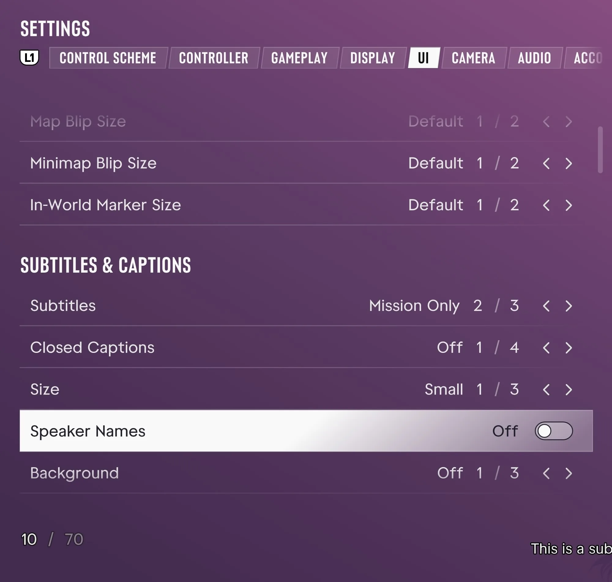

Cómo poner el texto en español
- En PS5, abre la pausa con Options. En el menú en inglés, entra en Settings, debajo de Photo Studio.
- Usa L1/R1 para llegar a UI. En el primer bloque, Scaling & Readability, cambia Language con izquierda o derecha hasta la variante que prefieras.
- Si ya estás en español, alterna entre México y España y comprueba cuál te resulta más natural. Si falta una variante, revisa el idioma de pantalla en la ficha de tu edición y región.
Cómo leer el diálogo mientras conduces
En UI → Subtitles & Captions, sube el tamaño, activa el fondo si el texto se pierde sobre zonas claras y muestra el nombre del hablante. Si solo aparecen durante las misiones, revisa si Subtitles está en Mission Only y elige el alcance que prefieras. La pestaña Brief del menú de pausa permite releer diálogos y objetivos.

Para agrandar los avisos, iconos y botones de la interfaz, cambia UI Text Size en Scaling & Readability. Ese ajuste se puede combinar con el tamaño de los subtítulos.